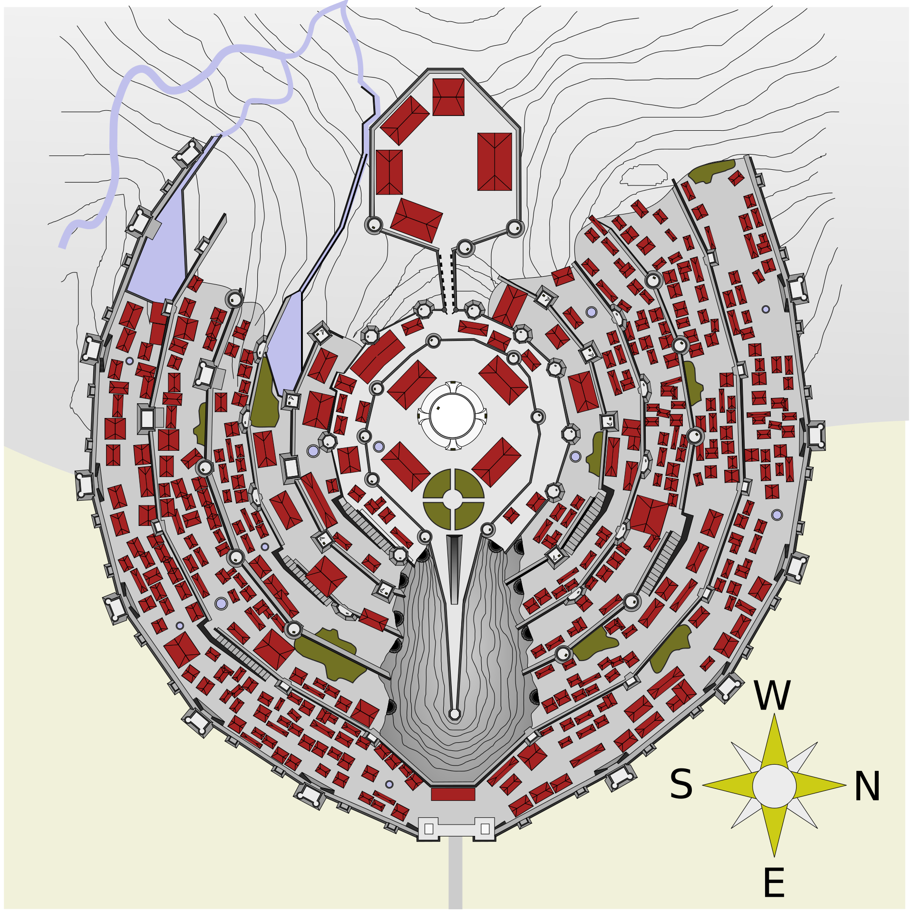

LA CITE BLANCHE
DECOUVRIR MINAS TIRITH
Minas Tirith, anciennement Minas Anor, est une cité fortifiée fictive issue du légendaire (legendarium) de l'écrivain J. R. R. Tolkien, apparaissant notamment dans le troisième tome du roman Le Seigneur des anneaux, « Le Retour du roi ». À la fin du Troisième Âge, époque du récit, elle est la capitale et la principale ville du royaume du Gondor. Cité jumelle de la maléfique Minas Morgul, elle fait face au Mordor et constitue à ce titre l'un des enjeux majeurs de la guerre de l'Anneau. La description de son siège par les forces de Sauron et de la bataille des Champs du Pelennor qui se déroule sous ses murs, qui permet sa libération, occupe une large partie du Retour du roi, et il en est de même dans les adaptations au cinéma du livre de Tolkien.
